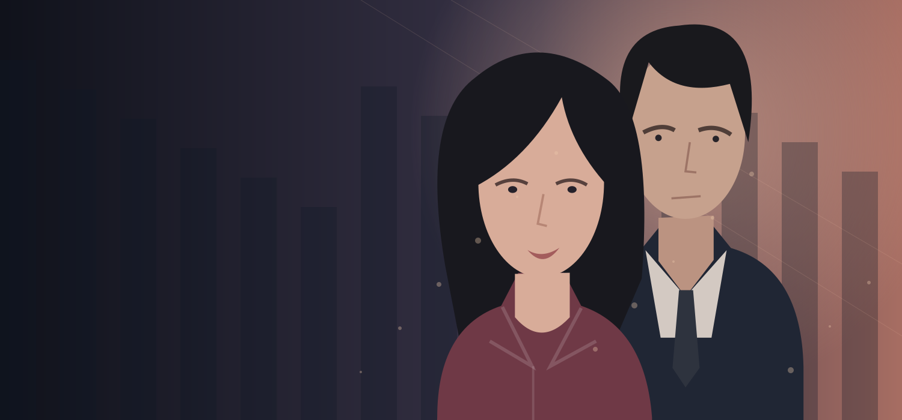

SHOT ORIGINAL · เรื่องใหม่ประจำสัปดาห์
#1 ซีรีส์มาแรงวันนี้
รักลวง
หลังจอ
เขารู้ทุกอย่างเกี่ยวกับเธอ…
ยกเว้นความจริงที่ซ่อนอยู่หลังหน้าจอ
▯ ถ่ายทำเพื่อจอแนวตั้ง · ดูต่อได้ทุกที่
01 / 04
YOUR NEXT OBSESSION
เรื่องต่อไปที่คุณจะหยุดดูไม่ได้
กำลังมาแรง ↗
กำลังเชื่อมต่อคลังซีรีส์…
▯
ยังไม่มีเรื่องในหน้านี้
ลองค้นหาด้วยชื่ออื่น หรือเพิ่มเรื่องที่ชอบไว้ดูภายหลัง
ONE MORE EPISODE.พักแค่สองนาที
พักแค่สองนาที
แต่เรื่องนี้จะอยู่ในใจนานกว่า
โลกของเรื่องเล่า ที่พอดีกับมือคุณ
SHOT ORIGINALทุกความลับ
มีตอนต่อไป▶
มีตอนต่อไป▶